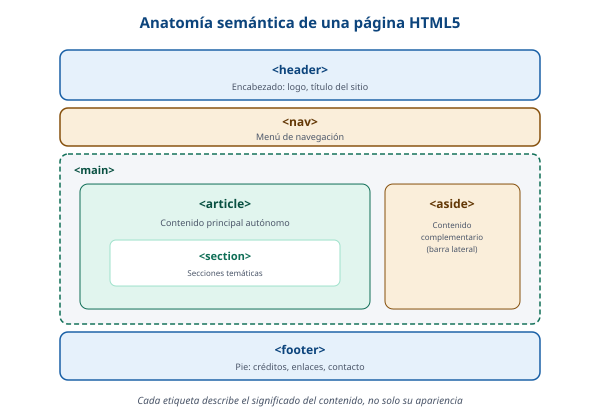

Respuesta y renderizado HTML5
El navegador recibe el documento HTML dentro de la respuesta y empieza a interpretarlo. HTML5 incorpora etiquetas semánticas, que describen el significado de cada parte de la página.
¿Por qué etiquetas semánticas?
Las etiquetas semánticas indican qué tipo de contenido tiene cada sección, y no solamente cómo se ve. Esto mejora la accesibilidad (los lectores de pantalla entienden mejor la estructura) y también el SEO (los buscadores interpretan mejor la página).

Elementos semánticos y su función
- <header> - encabezado de la página o de una sección.
- <nav> - bloque de enlaces de navegación.
- <main> - contenido principal de la página.
- <article> - contenido que tiene sentido por sí mismo.
- <section> - agrupa contenido relacionado por tema.
- <aside> - contenido complementario, como una barra lateral.
- <footer> - pie de página con créditos o enlaces.
- <figure> y <figcaption> - una imagen junto con su descripción.
Ejemplo de código HTML5
Así se ve una estructura semántica básica que el navegador va a interpretar:
<!DOCTYPE html>
<html lang="es">
<head>
<meta charset="UTF-8">
<title>Mi página</title>
</head>
<body>
<header>Encabezado del sitio</header>
<nav>Menú de navegación</nav>
<main>
<article>
<h1>Título principal</h1>
<section>Contenido por tema</section>
</article>
</main>
<footer>Pie de página</footer>
</body>
</html>
De hecho, esta misma página usa header, nav, main, section y footer para organizar su contenido de forma semántica.